Missão
Implementar estratégias e soluções ESG, promovendo desempenho socioambiental, geração de impactos positivos nos territórios e fortalecimento da responsabilidade das empresas, em alinhamento às melhores práticas internacionais.
DMS – Desempenho Socioambiental atua na estruturação e implementação de soluções socioambientais para grandes projetos de infraestrutura, com foco em gestão de riscos, leitura territorial, desempenho social e aderência às melhores práticas internacionais de sustentabilidade.
Apoiamos clientes estratégicos na gestão e mitigação de impactos socioambientais, em conformidade com requisitos das Instituições Financeiras Internacionais.
Combinamos consistência técnica, presença em campo e capacidade de execução para desenvolver soluções personalizadas, fortalecer a tomada de decisão e ampliar a previsibilidade dos projetos nos territórios.
Implementar estratégias e soluções ESG, promovendo desempenho socioambiental, geração de impactos positivos nos territórios e fortalecimento da responsabilidade das empresas, em alinhamento às melhores práticas internacionais.
Ser referência em gestão e desempenho socioambiental, atuando em projetos estratégicos, contribuindo para a mitigação de impactos adversos e para o desenvolvimento sustentável dos territórios e das comunidades locais.
Nossos valores

Nossa atuação
Presença estratégica no Nordeste
com escritórios em Sergipe e na BahiaParcerias internacionais em 6 países
ampliando nossa capacidade técnica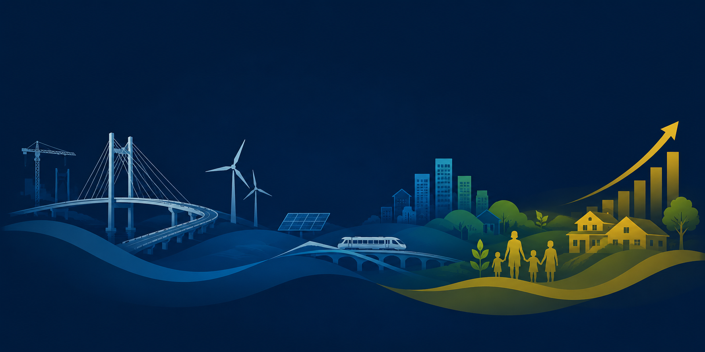
Padrões internacionais
A DMS atua em alinhamento com os padrões socioambientais e ESG exigidos pelas principais Instituições Financeiras Internacionais, apoiando clientes estratégicos e grandes empreendimentos de infraestrutura.
Esse alinhamento permite à DMS:
Instituições com as quais a DMS possui alinhamento técnico e experiência de atuação:
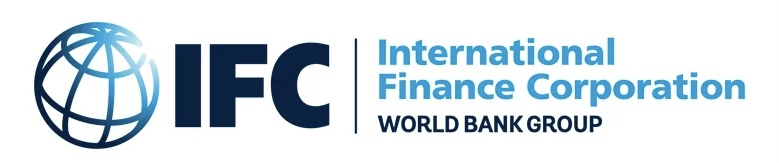

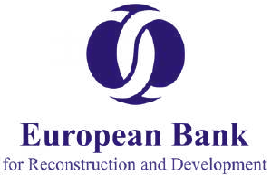
Padrões de desempenho IFC
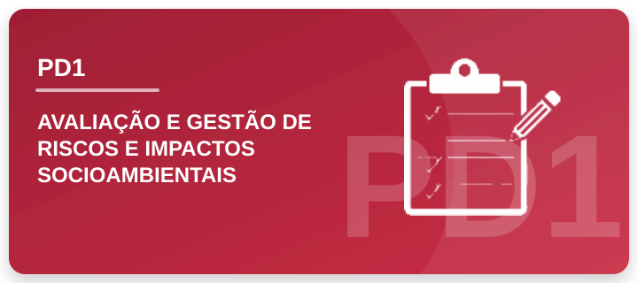
Estabelece como identificar, avaliar, gerenciar e monitorar os riscos e impactos ambientais e sociais de um projeto ao longo de todo o seu ciclo de vida.
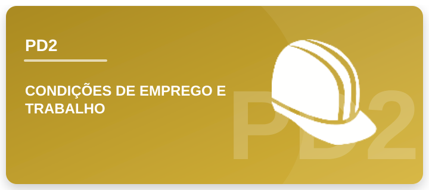
Define requisitos para garantir condições de trabalho justas, seguras e respeitosas, protegendo os direitos dos trabalhadores.
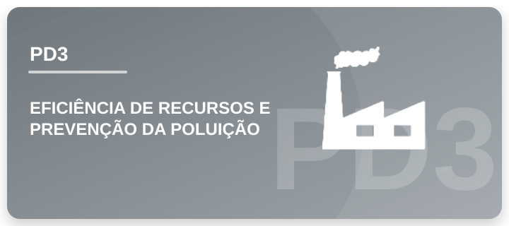
Promove o uso eficiente de recursos naturais e a prevenção da poluição, reduzindo os impactos ambientais das operações.
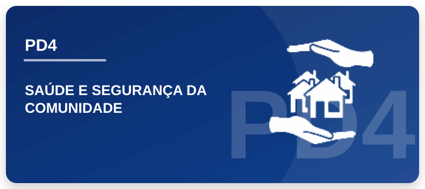
Busca proteger a saúde, a segurança e o bem-estar das comunidades potencialmente afetadas pelas atividades do projeto.
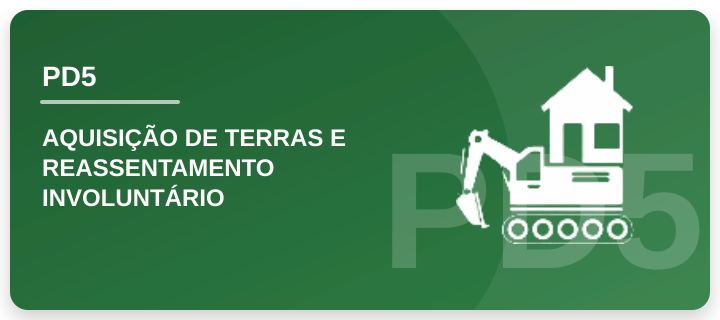
Estabelece medidas para evitar ou minimizar o deslocamento involuntário, assegurando compensação justa e restauração dos meios de vida das pessoas afetadas.
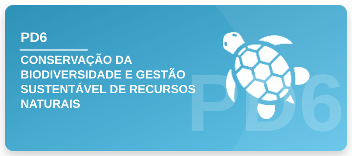
Orienta a conservação da biodiversidade, a proteção dos ecossistemas e o uso sustentável dos recursos naturais vivos.
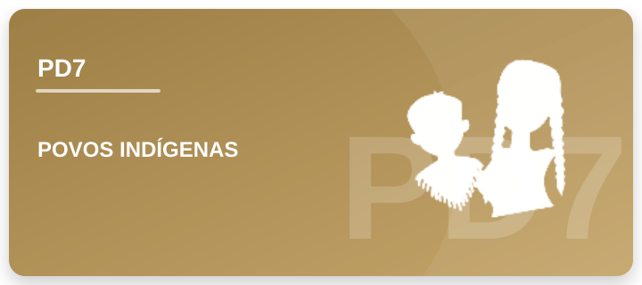
Garante o respeito aos direitos, à cultura, aos territórios e à participação dos povos indígenas nas decisões que possam afetá-los.
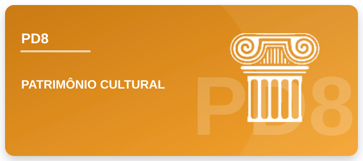
Protege o patrimônio cultural, prevenindo danos e promovendo sua preservação durante o desenvolvimento do projeto.
Nossas soluções
Estruturamos processos de acesso à terra, negociação fundiária, reassentamento, restauração de meios de vida e leitura socioterritorial, com foco em redução de riscos, participação social e viabilidade dos projetos.
Principais serviços
Apoiamos empresas na identificação, avaliação e gestão de riscos e impactos socioambientais, no fortalecimento da governança ESG e na estruturação de sistemas, planos e processos alinhados a requisitos legais, corporativos e internacionais.
Principais serviços
Integramos biodiversidade, serviços ecossistêmicos e agenda climática à gestão de projetos, apoiando estratégias de conservação, soluções baseadas na natureza, carbono e adaptação climática.
Principais serviços
Setores de atuação
Atuamos em setores estratégicos da economia brasileira, apoiando projetos e clientes em contextos complexos, com foco na gestão de riscos socioambientais, atendimento a padrões internacionais e fortalecimento da viabilidade dos empreendimentos no território.
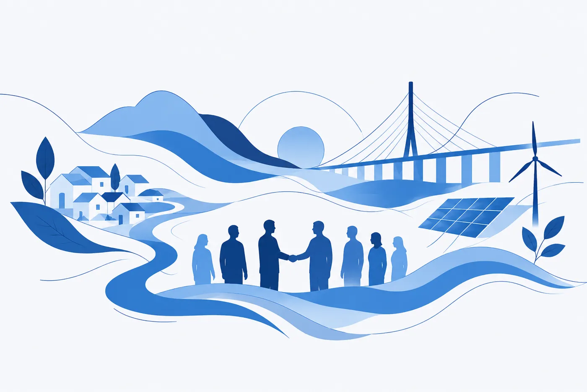
Experiência transversal em setores e cadeias produtivas estratégicas
Selecione um setor para ver os detalhes
Clientes atendidos:
Em parceria com:
Clientes atendidos:
Em parceria com:
Clientes atendidos:
Em parceria com:
Clientes atendidos:
Em parceria com:
Parcerias estratégicas
Experiências em campo
Clique nos vídeos ou escaneie os QR codes